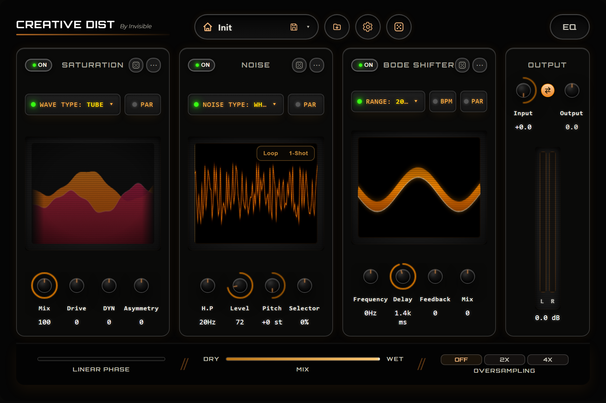
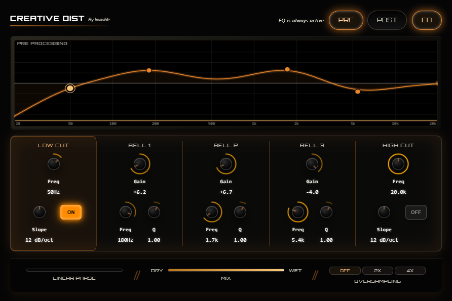

CREATIVE SOUND PRESENTS
CREATIVE DIST
A modular distortion engine for sound designers who don't do subtle. Saturation, noise and frequency shifting — three slots, any order, infinite chains.

THE ENGINE
Three slots. Any order.
Total control.
Creative Dist gives you three assignable effect slots — Saturation, Noise and Bode Shifter — plus an EQ and Output stage that are always present. Drag to reorder. Switch anything on or off. Roll the dice when you're out of ideas.
Saturation
14 distortion algorithms, one input.
From glowing tube warmth to brutal bitcrushed digital decay. Drive reacts to your signal's loudness with DYN, Asymmetry adds tube-like imbalance between half-cycles, and low end below ~150Hz always stays protected — even at maximum Drive.
- Tube · Soft Clip · Asym · Diode · Overdrive · Hard Clip
- Linear · Digital · Foldback · Sine · Bitcrush · Downsample
- X-Shaper · Dual Shaper
- Drive, DYN, Asymmetry, Mix
- Oversampling Off / 2X / 4X
Noise
Texture that breathes with your signal.
Five procedural noise types layered underneath — or on top of — your sound. Its volume always follows the input envelope, so it's never "always on," only heard when there's actual signal coming through. Switch to 1-Shot and it retriggers on every transient, locked to the rhythm of what you play.
- White · Pink · Brown · Vinyl Crackle · Digital
- Amount, High-Pass, Pitch, Selector
- Loop / 1-Shot (transient-triggered)
- Envelope-follows-input by design
- PAR — parallel bypass, stays clean and unprocessed
Bode Shifter
Frequency shifting for otherworldly motion.
Shift the whole signal up or down in frequency — not pitch — for metallic, inharmonic, unmistakably synthetic textures. Delay Time syncs to your DAW's tempo, Feedback pushes it into self-oscillating territory, and Mix blends it back with the clean signal.
- Frequency + Range (200 / 1500 / 2500 / 5000 Hz)
- Delay Time — free or tempo-synced
- Feedback
- Mix
Equalizer
5 bands, twice.
Two fully independent EQ banks — Pre and Post — sit before and after the creative chain, each with Low Cut, three parametric bells and High Cut. Switch both banks together to Linear Phase for a zero-coloration FIR engine when transparency matters more than a few extra milliseconds of latency.
- Pre / Post banks, independent of each other
- Low Cut, 3× parametric Bell, High Cut
- Linear Phase (IIR ↔ FIR) switch

Output
Auto Gain that thinks for you.
Auto Gain is always on, silently compensating for the level added by the creative chain — no chasing volume every time you tweak a knob. LINK mirrors Level to Input Gain for honest before/after comparisons at matched loudness, and a built-in soft-clip keeps Level from ever slamming past 0 dBFS.
- Input Gain / Level with safety soft-clip
- LINK — mirrors Level to Input Gain
- Auto Gain — always on
- Real-time L/R output metering
WORKFLOW
Save your chaos. Or roll the dice.
Full preset management with a customizable folder and one-click import of any .xml preset from anywhere on disk. And when you're stuck — every slot has its own dice, randomizing only that module's character while leaving the rest of your chain untouched.
LISTEN
Hear it in action.
Same loop, before and after Creative Dist. Flip between Dry and Wet — no level tricks, just the plugin doing its thing.
COMPATIBILITY
Runs where you work.
GET IT
One plugin. One price.
- 3 assignable slots — Saturation, Noise, Bode Shifter
- Dual 5-band EQ with Linear Phase mode
- Auto Gain output stage
- Full preset management + randomization
- VST3 / AU · Windows & macOS
- Free updates